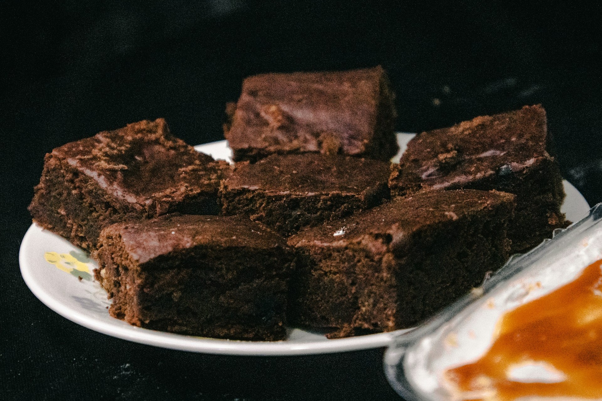

Home
Texas Sheet Cake

Texas Sheet Cake is a rich and moist cake that is baked in a large, shallow pan. It is typically made with a simple cake batter and is often topped with a sweet frosting or glaze.
The cake is known for its dense texture and intense flavor, making it a popular choice for celebrations and special occasions. It can be customized with various flavors and toppings to suit different preferences.
Ingredients
- 2 cups all-purpose flour
- 1 cup granulated sugar
- 1/2 cup butter, softened
- 2 large eggs
- 1 cup milk
- 1 tsp vanilla extract
- 1 tsp baking powder
- 1/2 tsp salt
Instructions
- Preheat the oven to 350°F (175°C).
- Grease a large, shallow baking pan.
- In a large bowl, cream together the butter and sugar until light and fluffy.
- Add the eggs one at a time, beating well after each addition.
- Stir in the milk and vanilla extract.
- In a separate bowl, whisk together the flour, baking powder, and salt.
- Gradually add the dry ingredients to the wet ingredients, mixing until just combined.
- Pour the batter into the prepared pan.
- Bake for 25-30 minutes, or until a toothpick inserted into the center comes out clean.
- Cool completely before serving.